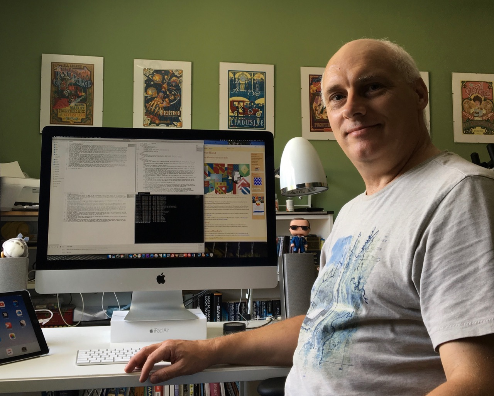

My name is Karl Wilcox. I am an educator, web developer and programmer living in Lincolnshire, in the East of England. You can find out much more about my background on Linked In so I won't repeat it here.
I looked at Heraldry and blazonry as a programming language, and wrote a compiler for it. The original idea belongs to my group project supervisor for my undergraduate degree, which we implemented in UCSD Pascal on an Apple ][. About 20 years later, looking for a project to test my programming skills I re-implemented it and massively expanded it in PHP and SVG.
While researching blazonry I found many good resource on archive.org but found the multi-megabyte PDFs a difficult medium to use comfortably. Hence, I started another project to convert these into cleaner, searchable web pages.
The source files for this website are HTML5 and CSS with Embedded JavaScript ("ejs files") and are edited where necessary using Sublime Text 3. I use Harp to compile these files into pure HTML5 and CSS. The page layouts make use of Bootstrap 4 design elements with a custom theme designed by me.
The interactive parts of the pages are written in JavaScript, and the server-side programs such as the main DrawShield engine are written in PHP, again edited with Sublime Text 3.
Bitmapped images and photographs are manipulated using Serif Affinity Photo. Vector images and other design elements were created using Serif Affinity Designer
Most development work is done on a 27" Retina iMac under Mac OS, with 16GB of RAM and 1TB fusion drive. This desktop system has a daily backup to a Network Storage device using Carbon Copy Cloner and a continuous incremental backup to a separate external drive using Time Machine. I also have a MacBook Pro available for offsite editing, the two Apple devices are synchronised via iCloud document sharing.
The test system is a Linux Mint Virtual Machine image running the Apache Web Server. The virtual machine is hosted by VirtualBox, itself running under Linux Mint natively on a headless 2008 MacMini server. Filezilla is used to synchronise the development version and the test system.
The live pages are served from a shared Linux server running Apache and provided by UKHost4U, again Filezilla is used to upload the pages.
